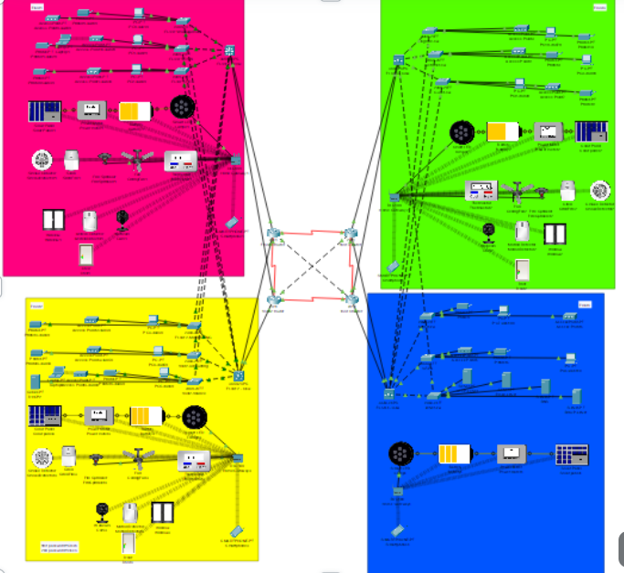

Smart Bank
Our project focuses on enhancing and innovating the banking system. It aims to provide users with smarter, more efficient, and more secure financial solutions. The goal is to revolutionize how customers interact with financial systems, improving accessibility, automation, and overall user experience.
We used in it multiple protocols .
for more informations :
Smart Bank.
Packet tracer version for this one to ping , you need to wait for it to load a little bit !!!